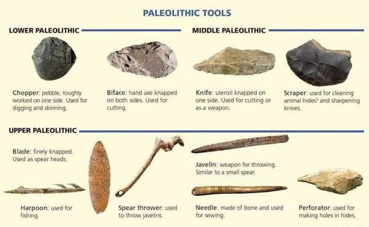
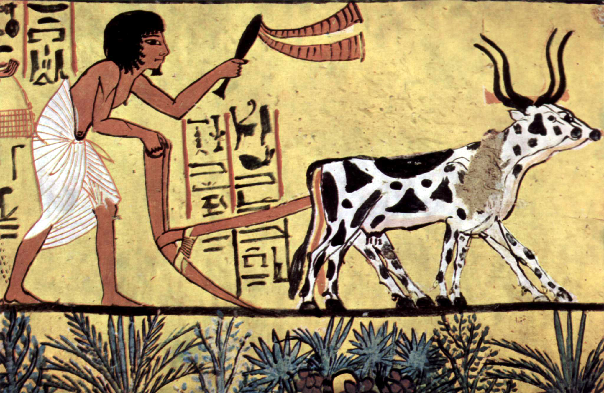
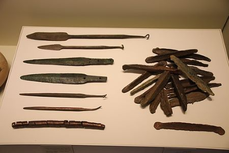
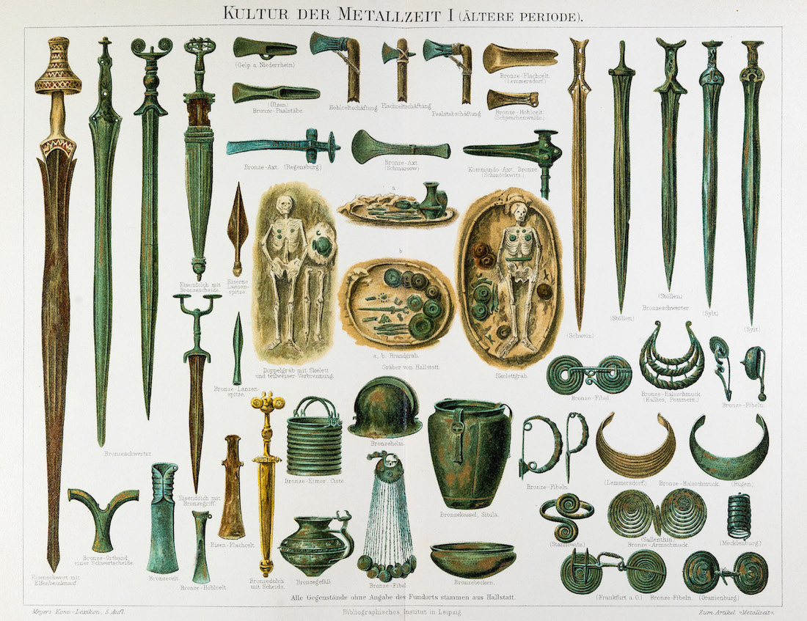
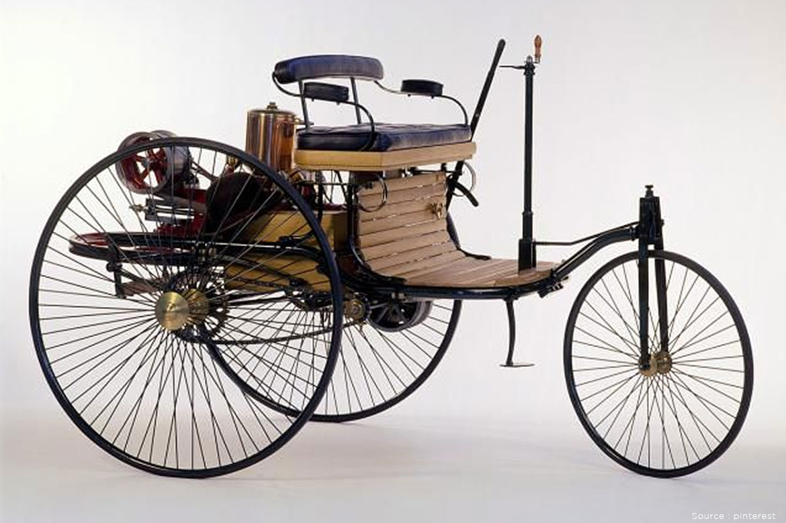
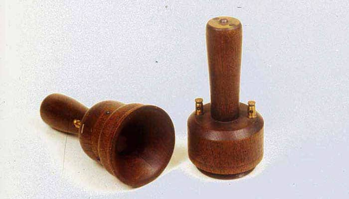
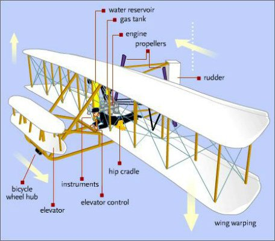
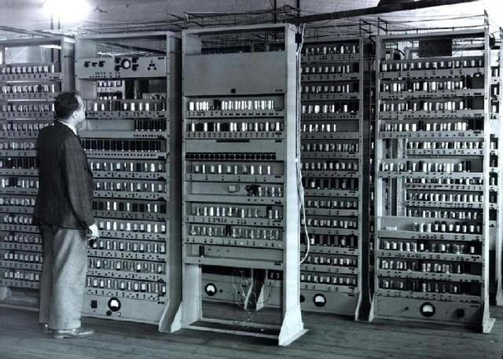
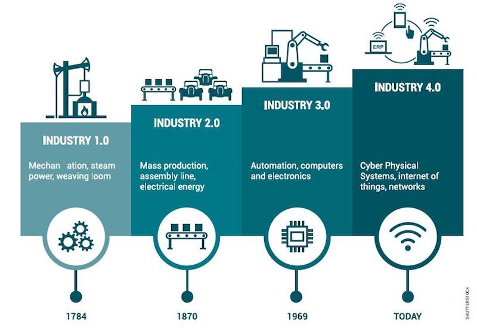
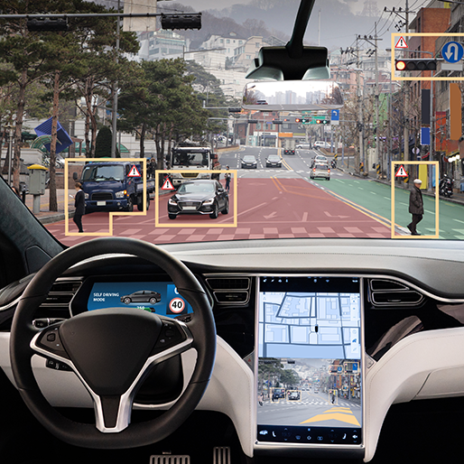

Development/Evolution of Technology
What is the Technological Evolution?
According to Czech philosopher Radovan Richta, Technological evolution is a theory of
transformation of society through technological development. |
|
Palaeolithic Period (2.3 Million Years Ago)
During this prehistoric period of time also called “before the stone age” humans constructed the earliest
means of human tools( knives, hammers, scrapers) from stone, wood, antlers, and bones. |
 |
Lower Paleolithic Period (1.3 Million Years Ago)
Historians believe that one of the prominent technological breakthroughs, the discovery of “fire” originated
more than 1.3 million years ago during the lower palaeolithic period. |
|
|  | Neolithic Period (12,000-15,000 Years Ago)
During the neolithic period, humans invented some key technologies like agriculture and animal farming
and harvesting techniques. People began to live in large groups and laid the foundation of modern-day society. |
Copper and Bronze Age ( 6000 BC) The Copper and bronze age is an era of great technological advantages. Humans began to extract materials such
as copper and bronze for making tools. |
" |
|  | Iron Age (1200 BC-2000 BC) During this particular period of time, the introduction of iron ore smelting and forging technology allowed us to make more efficient, lighter, stronger, and cheaper tools and weapons thus replacing tools made from bronze and copper. |
Mesopotamia (800-1800 BC)
Mesopotamia pioneered the discovery of wheels. Writing practices were first invented in Mesopotamia. |
|
The Roman Empire (25 BC – 390 AD)
A crucial development in technology was carried out during this time. The Roman empire was economically developed and
productive thanks to advanced engineering and scientific knowledge. |
|
18th &19th Century: The Era of Modern Technology
The first industrial revolution of the early 18th century driven by the discovery
of the steam engine set an important aspiration of modern technological evolution.
In the 18th century, important technological breakthroughs took place. |
|
First Industrial Revolution (1600-1820s)
During the first industrial revolution, numerous inventions were unveiled. Minerals like Coal were used
to generate much of the energy for the industry. |
|
The Evolution of Technology in Communication (1831) The big change in technology started in 1831 when the electric telegraph was invented. In the 19th century,
the revelation was with the hand of electrical engineering. |
|
The Invention of The Automobile (1880)
The invention of the automobile is widely considered one of the key technological discoveries in the course of human history. |
 |
|  | The Invention of The Telephone (1849)
The Tech phone was invented in 1849, it was the mainstream of the business, and the office for those who have luxurious options was at home.
It has taken almost 50 years to develop the telephone. |
Second Industrial Revolution (1860-1930)
During the period of the second industrial revolution new industries emerged, and mass manufacturing revolutionized industrial production. |
|
The Invention of Airplanes (1904)
Humans have always dreamed of flying in the sky. |
 |
|  | The Invention of The Computer (1930)
What started as a calculative device is now known to be a major discovery in modern human civilization. |
|
Internet – (1974)
Internet communication has had a revolutionary impact since the mid 19th century in 1974. |
|
Industry 4.0 The motto of the 4th industrial revolution is “digitalization”. In the 21st century, smart factories have emerged, these factories are highly automated and technologically superior. |
 |
Artificial Intelligence (2017)
Artificial intelligence ( AI) will work like humans and animals which will understand emotion. |
|
5G Networks (2019)
5G will provide superfast internet bandwidth. 5G will enable the users to
download large files from the internet within seconds( up to 10 gigabytes/ seconds!). |
 |
|  | Unmanned Autonomous Vehicle In the near future vehicles will be driving on their own. Autonomous technology and AI will let the vehicle make decisions and assist in driving without breaking any traffic laws and avoid accidents. |
Additive Manufacturing
The slogan of additive manufacturing is “democratizing technology”. |
|
Virtual Reality
Virtual reality seems like a technology that comes straight from science fiction. |
 |
|
Technology has helped us to conquer modern civilization where we all stand today. Technology always evolves and becomes more advanced, sometimes it is ahead of our time. |
|